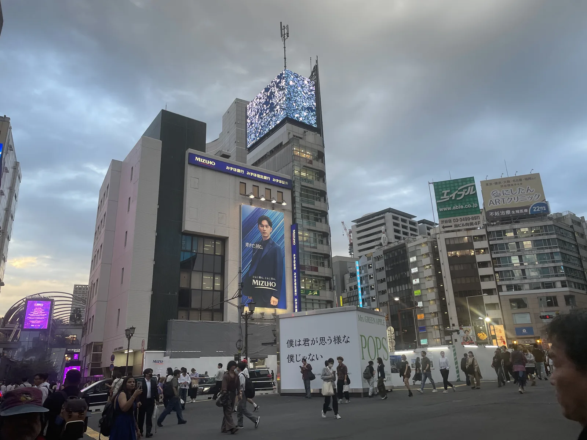
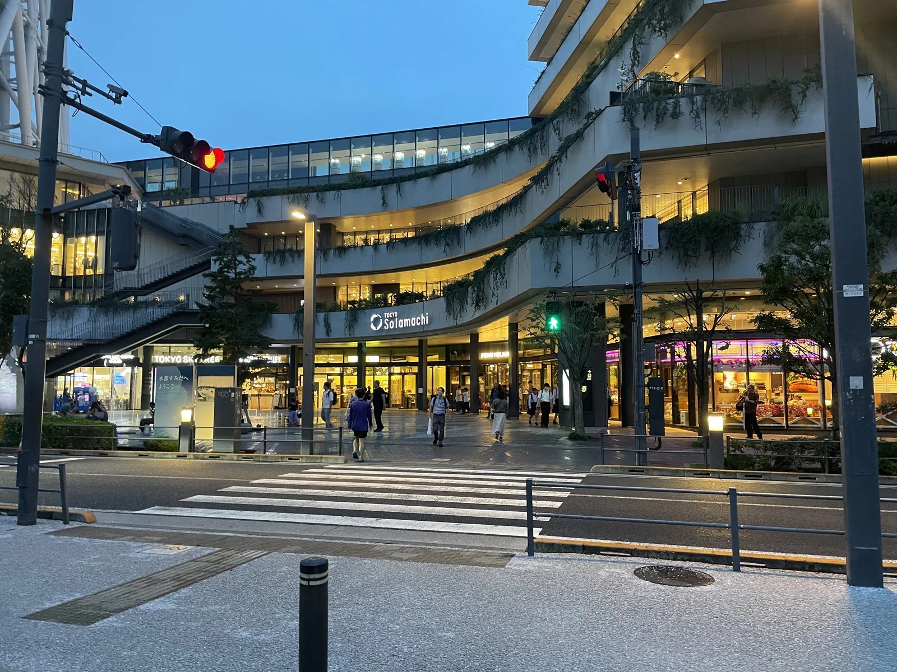

1
신바시
오피스 거리의 활기와 오래된 골목이 어우러진 여행의 출발점입니다.

신바시에서 긴자와 쓰키지, 도쿄 워터프런트를 지나 도쿄 스카이트리까지. 시내버스 한 대로 도쿄의 여러 얼굴을 만날 수 있습니다.
도쿄 23구 내 일반 도에이 버스의 성인 균일 요금입니다. 최신 운행 정보는 공식 안내를 확인하세요.
GYO-10을 따라 만날 수 있는 동네와 풍경을 골라 소개합니다. 아래 내용은 주요 볼거리이며 전체 정류장 목록은 아닙니다.

오피스 거리의 활기와 오래된 골목이 어우러진 여행의 출발점입니다.
세련된 거리와 플래그십 스토어가 이어지는 도쿄의 대표적인 도심 풍경입니다.
먹거리 문화와 시장 분위기를 즐기며 걸어서 둘러보기 좋은 곳입니다.

도요스와 가치도키에서는 탁 트인 수변, 다리와 현대적인 스카이라인을 볼 수 있습니다.

도쿄를 대표하는 랜드마크 중 하나인 도쿄 스카이트리 아래에서 여정을 마무리합니다.
아래 기본 정보는 도쿄 23구 내 도에이 버스에 적용됩니다. 최신 정보는 공식 링크에서 확인하세요.
하루 동안 도쿄 23구 내 도에이 버스를 무제한 이용할 수 있습니다(고토 01 제외).
구매 방법은 변경될 수 있습니다. 최신 내용은 도쿄도 교통국에서 확인하세요.
시간표, 노선 변경 및 운행 정보는 반드시 공식 서비스를 통해 확인하세요.
Toei GO Tokyo는 독립적으로 개발된 여행 앱이며, 도쿄도 또는 도쿄도 교통국의 공식 앱이 아닙니다.